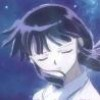

On the morning on November 15, 2004, I woke up in a panic. It had been five days since my 22nd birthday—four since I said goodbye to Matt outside of Subway after lunch. After he had tried to do something special for me for my birthday, I was very scared. Standing nervously on the curb outside his Civic, I saw a resigned, hurried look in his eye—like he was finishing something. I brushed it off. He was just leaving, he wasn't pushing me away.
I woke up at almost 7 o'clock that morning, after four days not speaking to him and a weekend of unanswered phone calls, and felt desperate. I thought this day I would turn things around. I could start fresh, not miss anymore classes, and I could begin digging out of my deepening depression. I would work to finish the semester right and undo the damage that had thus far been inflicted. But I could not escape the emerging truth: Matt was leaving me and there was nothing I could do to stop it.
Despite feeling at a complete loss as to why Matt was ignoring me, I tried to pull through with my plan. I got myself out of bed and grabbed my towel before catching a look at myself through the dresser mirror. I tried choking back the tears and looked away quickly. I wiggled out of my clothes, wrapped the towel around my waist, and entered the bathroom. I looked again into the bathroom mirror, disgusted at myself. I stood there, staring in the mirror as the shower ran, and I started to cry.
I came to realize in that moment that I was hated. What had I done? When did my relationship with Matt slip away from me? Losing Matt was the most traumatic moment of my entire college experience and it came to me in what seemed to be the worst possible time. In it, I realized how intensely I valued him and did everything I could to hold on—and failed.
Also, in my desperation, I drifted into a dark depression, watching the promise and opportunity of my final year slip away. But, most importantly, in the wake of the pain and trauma of my Senior year, I survived. Though it was a struggle, I endured a fundamental change and somehow found the strength to leave this hell behind.
It was the darkest, the most desperate. It was my Senior Year: the final chapter and the year I broke free.
Tropical Depression
My semester began with a long-awaited visit from my mother. My new roommate Jennifer was moving in and I was getting ready to start the new semester. It's so strange: I can think back to that week like it were only yesterday. Like everything that happened after it were some nightmare or a dream. Things then were so normal and expected.
Once classes had started, I was off and running. After besting the academic hurdles of my Junior Year, I was confident I could finish my English degree. I intended to become staff on the Red & Black so I could sharpen my writing skills and get the clips I needed to land a job. It was a slow start. For one, my friend Antonio died. It was the first funeral for a friend I ever attended.
In the absence of Lambda (and an adequate vein for practicing Spanish), I decided to do something I had never done before: volunteer. I taught English to speakers of other languages (mostly Spanish speakers) for Catholic Social Services. Jeremy had done it in the past, and Matt's roommate Diane was going to an info session, so I tagged along. It turned out to be one of the most rewarding experiences of my entire college experience.
A crisis arose after an unfortunate experience with a carrot. It came to my attention that I had to get my wisdom teeth out. It was a pricey operation which I was only able to afford the procedure with the help of my mother. Though the surgery was a real gas, the mouthful of gauze and my swollen cheek were another matter. Around the same time, growing tensions between me and Missy brought about confrontation. Some lingering issues left from Spring Break needed to be dealt with, so the two of us had it out. After a few weeks of exchanging dirty looks and bitter phone calls, Missy and I talked, and we were good friends again. Though we will never be the same friends like we were those carefree days living on campus, we were still friends. Very good friends.
On an evening in September, when the big hurricane came through, the power was out. I sat huddled in my dark room, listening to music on my dying computer. Matt was coming over. He had been working so much at his new job in Atlanta, I barely had anytime to see him anymore. I couldn't wait to see him, I was so content—and so stupid. Oblivious to the fact that my life was about to fly to pieces.
Wings of a Storm
It was at that moment when my semester—my whole year—turned on its head. Matt was leaving. He was moving to Atlanta. He wanted to get out of Athens because he was convinced it was responsible for his deepening depression that he'd been suffering through for almost two years. I was shell-shocked, I didn't know what to do. I didn't know if his leaving was because of me or if it truly was Athens. I only knew I didn't want to lose him. I didn't want to let him go.
For the first few weeks, I didn't know what to do. I tried to talk to him and understand his decision. Maybe I missed the point of breaking up, but at the time it just didn't seem right. He was my best friend. For the past year and a half I had changed so much because of my relationship with Matt. I wasn't the crazy drunk party favor cruising around with Missy. I was grounded and very much in love. I wanted to help him and be there for him, but he just kept pushing me away. I started cracking and I desperately needed someone to be there for me. I just kept getting the sinking feeling that I was being cut away.
On November 5th, the night that would have been our 18 month anniversary, I called him, close to tears. He came over, realizing that I was quickly becoming very depressed with the situation, and tried to help. We drove around Athens in his car. I stared at the dashboard, relishing in the moment of him driving—him helping me. I stared blankly at his dashboard, arms crossed, listening to him recount a story about how Athens embodied his struggle for self-esteem.
He told me about Subway, the place Barry worked and the place he applied to several times. He'd go in for an interview, putting his best face forward, but he would never get the job. Then Barry would tell him about all the endless parade of worthless people who were able to get jobs there. This confounded Matt. Why was he passed up for a bunch of pot-smoking slackers? He told me that everytime he drove by that place, it would remind him of his worthlessness and depression. It was the embodiment of everything he wanted to put behind him.
But I couldn't accept it. If it was his many failed attempts at finding a job, why did he feel he had to leave me? What did I do to him? In the weeks leading up to and after his confession to me, he treated me very coldly—ignoring my calls and shunning me from his friends. "It would be awkward," he told me. I just didn't understand it. That night, after hearing his explanation, I sat in his car crying for him to stay with me, only before he left. If he loved me—if he ever loved me—at least he would try. It was a difficult ceding control to him and accepting his decision, but ultimately, something I had to do it. But not before I had endured a great deal of pain.
Never Been a Calm Blue Sea...
Despite my break-up with Matt, the semester did not relent. I tried as best I could to keep things together. As far as my Blog, I did not reveal anything about my situation (until I finally conceded the truth). In the interim, I signed up for a free online iPod offer which I kept readers abreast of throughout the semester. I did manage to get the little trinket, but certainly the more cunning Blog reader would know such an excursion was a distraction from my increasing misery.
Though I was not apt at filling the Internet in on my depression, I did find an outlet in my friends. I reconnected to some people that I had lost touch with while I was involved with Matt. The two people who really stepped up for me were Jeremy and Padmini, a fabulous pair. Along with my good friends Genevieve and Marilia, I was truly blessed to have such caring people to help me through the pain.
Academically, I knew I was capable, but I would frequently skip classes and botch papers. The most daunting obstacle of my final Fall semester was my public affairs writing course with Griswold. I had to prepare 6,000 words worth of public affairs articles before the end of the semester to complete the course. It wasn't until the very end, after an all-night effort, I was able to complete the course and best the dinosaur Griswold (sweet old man, but a horrible teacher!)
As you may know, My past efforts to fulfill my pre-1800 English credits were not always successful: I withdrew-failed Trivedi's Seventeenth Century poetry class and narrowly missed a D in my Shakespeare Comedies class with Vance. Since I had already run the gauntlet with Vance, I decided to take Shakespeare in Film, which offered me the opportunity to further excel in the subject. Every Monday night I got the opportunity to see a different adaptation of a Shakespeare play. I got to see some amazing films like Ian McKellen's Richard III, In The Bleak Midwinter, and Some Like It Hot (which featured a haunting tune by Marilyn Monroe that inspired a hidden entry of mine).
Despite all the goals I had set out for myself to accomplish in my final year, I could still not get over what I was losing. I wanted to work to get a job in the new year and break free of this place, but I could not help coming to the stark paralyzing conclusion: I was alone in my depression and nobody was going to help me out of it. As the winter settled in, things got worse and it would be a long while before they got any better.
...But I Have Always Been a Storm
As the holidays came, my talks with Matt got colder and we became distant. It became more and more apparent that I was going to have to let him go, but I felt I still needed something from him. Just in time for the holidays, there was a family crisis when my uncle's kidney's began to fail. After years of alcoholism, he was dying. My sister and I went to support my aunt and cousins in Sebring, Florida, a small Central Florida town where I spent so many weekends at when I was young. In a white-washed hospital room down an empty hallway on Thanksgiving, I told my Uncle that I loved him. I don't know if it made a difference, but I was there. I did the least I could to help my cousin, Laura, during the death of her father.
When I returned to Athens, I had to face the fact that I was going to have to say goodbye to Matt. He had set his affairs in order and moved in with his parents. We decided we would say goodbye amicably, but before we could do so, I was swept away with final projects, final exams, and a trip to Ohio for Christmas. Maybe it was my way of stalling, but I was going to have to deal with Matt when I returned.
The trip to Ohio was a sweet, brief relief. I had always been close to my mother, and ever since January, she had become my only real parent. I was always very open with her about my relationship with Matt. I was so excited when she had to opportunity to meet him just months earlier. She knew I was having a hard time, so she tried to give me a special Christmas. Sometimes, when I'm at home, I feel worthless and alone. When I come home to mom, I feel I have someone who really loves me and makes me feel like I'm worth a damn.
When I did return, I did face Matt. It wasn't easy. His patience with me had waned completely and he refused to answer my calls or messages. It hurt having him treat me that way. I don't think I'd ever been driven to that point of frustration and madness. I felt like I was losing my mind.
In the moments after I last I saw him—while I was curled up sobbing on my roommate's bed—I realized that I had to let him go. If I really loved him, I had to let him choose. I had to let him own his decision to leave, and I couldn't be a part of it. I wish I had the foresight or strength to come to that decision sooner, but I didn't have it. I told him I couldn't talk to him for a while. I knew I had to weather the storm. Alone.
Repression
At the beginning of my final semester at UGA, I didn't want Matt's decision to continue to keep me from taking advantage of my last semester at UGA. I started putting things behind me by throwing myself into the one thing I had the most pride for—my webpage. Maybe no one will understand that, but it was one of the only places that still made me feel like me. The last update I prepared for it was the most ambitious ever, with the most impeccable and innovative design. I even adapted a Blogger template to my theme, delivering comment ability at long last to my Blog reading public.
I made alot of changes in the new year. After years of being an prick to my vegetarian friends, I gave up on meat. I also threw myself into my beginners weight training class, hoping to build up my skinny little muscles into something alot more sexy. And, perhaps my most fulfilling new habit, I began to run. I don't know why I did all these difficult things, but in my distress, I found the strength to do them.
I found new places to go and new things to do. In the mornings and afternoons, when I arrived on campus, I would go to the commons area 'Tween the Pages near the entrance to the library. Most times, I would purchase an M&M and chocolate chip cookie, a bag of Baked Lays, and a bottle of Righteous Juice Co.'s Freshly Squeezed Lemonade. I would sit at a table and enjoy my snack, by myself, and read the news. I would often even Blog from there in the precious moments I had before running off to class.
I also started a new job. One afternoon, after some prodding from my professor, I called up the Red & Black about doing some copy editing. They had a spot open, so I went down to see what it was all about and a week later I was on staff. I had made staff at the Red & Black. Though it was a great personal goal I achieved rather late in my college career, it was an achievement nonetheless. I was very happy to have the opportunity to build my skills as well as my resume.
On February 6th, a couple of weeks after the nifty winter storm that coated Athens in a sheet of ice, I went back to Marietta to do my cousin a favor. She was taking photos of her family in friends for her college thesis. I was the first to pose, and after a grueling 2 hour shoot, she was through with me. I posted the technical shots on the site and later the finished version. It was hailed as the best in her thesis—it was even shone in the Atlanta Photography Gallery in July for a show called Emerging Vision. Though the emotional weight of these photos had alot to do with my cousin's considerable skill, you may wonder how much of it was inspired by my own issues. You may also wonder what exactly I was writing in that book.
The Things I Do For You
After a dismal Spring Break, I was dead set on bringing something to a close. I never shared what that was, but I reached an impasse shortly before I could finish. It was a normal Monday afternoon. I got home from class and got ready to run my 6 miles when I noticed I got a late bill notice in the mail from Charter. I knew I didn't have alot of time to deal with it. I called them and bitched on the phone angrily for about thirty minutes, but it wasn't the bill that had me so upset.
I was so angry because I couldn't run. I had wasted too much time and to be at work at 5. I don't know why, but driving to work, I broke out in tears. I came to the realization that no matter what I did—how many miles I ran—it didn't matter. I can't be any more specific than that. The prospect that everything I had been doing to help myself recover would not offer me the solace I sought was a sobering conclusion. It was a turning point, to say the least, and things got better after that.
The highlight of the semester came with the release of the new garbage album, Bleed Like Me. I refused to download a single track (with the exception of the single "Why Do You Love Me") until the release date. On the morning of April 12th, I heard it for the very first time. The album came at the best time. I have been enamored with garbage since I was in high school, and hearing a great new album really helped to bring some joy into my life. I even got to go to my first solo garbage concert on the same week! I posted pictures, reviewed the show, and that week even reviewed Bleed Like Me and the albums previous. It was a fabulous Garbage Week.
My last semester at UGA went swimmingly. I had one final installment with Professor Fink before graduating (though this time around it was less impressive). I also took Advanced Composition, answering a belated request of McAlexander (from way back in Fall 2003). I got an A, go figure. I also took my final pre-1800 class: Women in Chaucer's Canterbury Tales. Professor Shutters was very engaging and I produced two superb papers in the class (netting a Brandy face on the first one) and eventually finished the class with an A. It was a comfort to know at least my academic troubles were finally over.
My final days as a student were very nice. Long lost expatriate Nicole came into the country for a visit, so I went back to Marietta to see her and another old friend. It was quite the experience getting drunk with her (and April, for the very first time!) The next week, I threw my very own tofu party. It was delicious fun. The week after that, I had an especially drunk time with Leena at what I thought was my last Krush Girls. I may have no idea remember how the evening ended, but I do recall dancing shirtless with just about the sexiest woman ever. Partying with Leena was just fucking amazing—no one that semester made me feel more alive.
Run Baby Run
So I graduated. It wasn't pretty, but I was done. I had one more thing left to do: find a job. It was my only priority for the summer, but getting what I wanted most was not going to come easily. I have to thank my good friend Jeremy for really pushing me to make my professional website and get my resumes out there. I don't think I would have got my shit together without him. It was a shame that I had to say goodbye to him so soon (but thankfully, not for long).
I didn't get a part time job, but I did some freelance editing with The Informer—a magazine I wrote for during my Senior Year. It was alot of fun editing with my new friend Heather (though some articles were morally ambiguous, at best). I dedicated most of my time to sending out resumes and interviewing for potential jobs. I would wake up as early as 8 a.m., look around for new job offers and research newspapers that I wanted to work for. At 10, I would go for my usual grueling 6 mile run. After returning and taking a nice shower, I'd print and package my resumes and send them in the mail. I'd usually take a nap in the afternoon before perhaps making some tofu and spending the evening with friends. It's was good to be an alumni.
I spent alot of quality time with Padmini taking advantage of her steady stream of Netflix movies. Though, there was this unspoken rule that everytime I came over for a movie night, we'd have to have ice cream (not sure where that came from, but I swear it was Padmini's idea). I also had a good time hanging out with my best friend Genevieve and her new puppy, Kali. I even did Gen a favor one weekend by puppy sitting Kali—a terror, I assure you.
The climax of the summer came with the Peachtree Road Race. I had been training for months, running as much as 30 miles a week: I was ready. Running through the streets of Atlanta was haunting. I knew I had to find a job because it was so important to me to put this place behind me. I never thought I could survive any place else, but I wanted so desperately to prove that I could. Finishing that race was an accomplishment for me. It felt like a singular step in the right direction. I was getting out: I would finally going to leave it all behind me.
I got close to a job, but it wasn't meant to be. I came to admit that which I dreaded the most: I would be going to Ohio, with my mother. My last few days were very special. I had one last amazing weekend with the girl who started it all, Missy. There was the real last Krush Girls with Leena along with a special night we had out on the town (lip-smacking highlights on the Galleries Page). Once I had packed all my things, said goodbye to all my friends (and sent a select precious few farewell tribute blogs, along with one denouement), and left my beloved house behind, I published the long promised poem "My Regret," sent out this Senior Year retrospective, and wrote my farewell Blog. I was done. My college experience, and my beloved website, had finally come to an end.
My Senior Year was, in some respects, an absolute hell for me. I lost my best friend at a time when he seemed like everything. I don't know why I never fully recovered. Maybe it was because I was graduating and knew I had to leave Athens behind. Maybe it was because what he did messed me up so bad, I just needed more time. Or maybe I didn't want to. Whatever the reason, whenever I think back to this year, I will remember it as the year Matt left me.
But that is not all I will remember. I will remember the moments that made me feel I was still alive. I will remember laughing and watching Showgirls with Jeremy, Adam, and Padmini. I will remember going to Krush Girls with my cool friend Leena, who made me feel so amazing and free. I will remember all those muggy summer afternoons, running endlessly in circles. And I will remember the home I am leaving behind. I could never forget a place like Athens, not even if I tried.
So, that's the end of this story. I don't know where I'll end up. Perhaps one day, there will be an after UGA Blog—who knows. I just know the story is never over.
I named my website "Thursday," after a poem I wrote in high school. It's about a man, who's confronted and wounded by the past he thought he'd left behind him. For a moment, in the lust of reminiscence, he gazes on the past with longing and defeat. Now that my website has come to an end, I feel I've finally reached the end of that poem. And, as the poem ends:
| I gather my composure that was taken by your thrust I continue down the field |